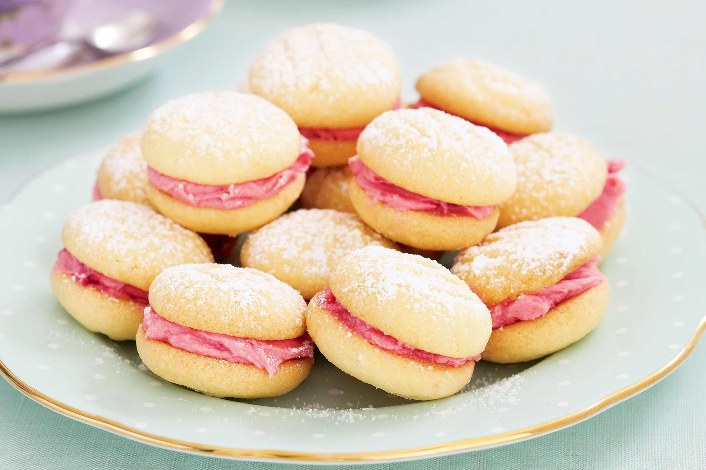

Melting Moments
classic melt in the mouth biscuit sandwiched together with buttercream.

Ingredients
60 g icing sugar ((confectioners sugar / powdered sugar), sifted)
170 g unsalted butter (softened at room temperature)
½ teaspoon vanilla extract
175 g plain flour ((all-purpose flour) sifted)
50 g custard powder (note 1)
Melting Moments are a buttery crisp shortbread cookie that has a coating of powdered sugar. They are a popular
Christmas cookie, maybe because they look like snowballs. While I'm not sure how this delicious butter cookie
got its name, maybe it's because this cookie literally melts-in-your-mouth.Melting Moments store very well, up
to two weeks, and they can be frozen. As far as the ingredients go, because there are not a lot of competing
flavors in this cookie, try to use a good quality butter. Also, try to use 'pure' vanilla extract not the ones
that are labeled 'imitation'. The batter contains both All Purpose Flour and Cornstarch, and it's the cornstarch
(a fine white powder that comes from the inner grain (endosperm) of corn) that gives the cookies their wonderful
melt-in-your-mouth crisp and crumbly texture. However, this also makes the cookies quite fragile so they're not
a good cookie to ship.
Read more: https://www.joyofbaking.com/MeltingMoments.html#ixzz7gLsfJXpi
Follow us: @joyofbaking on Twitter | joyofbaking on Facebook